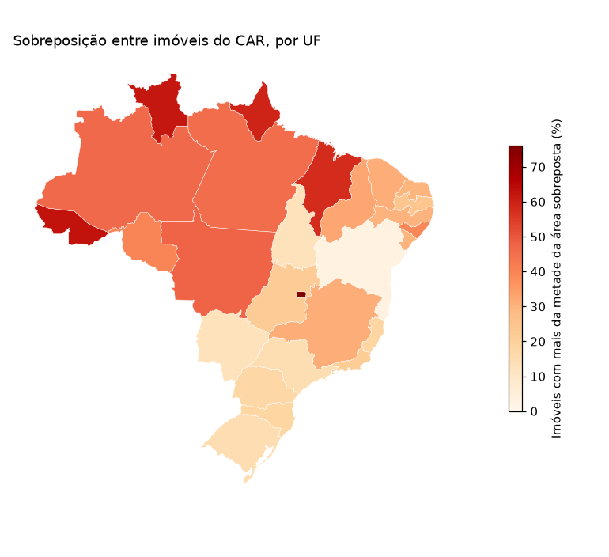
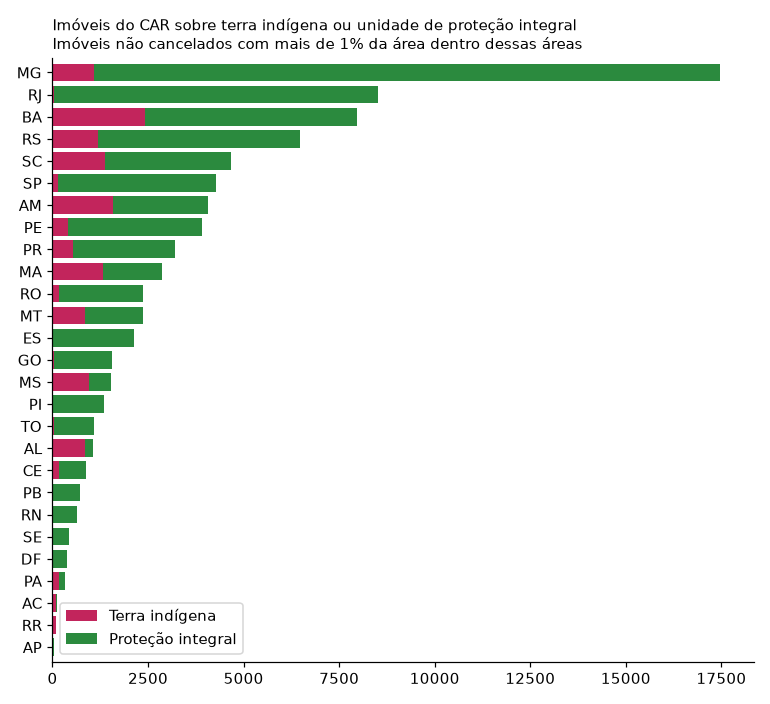
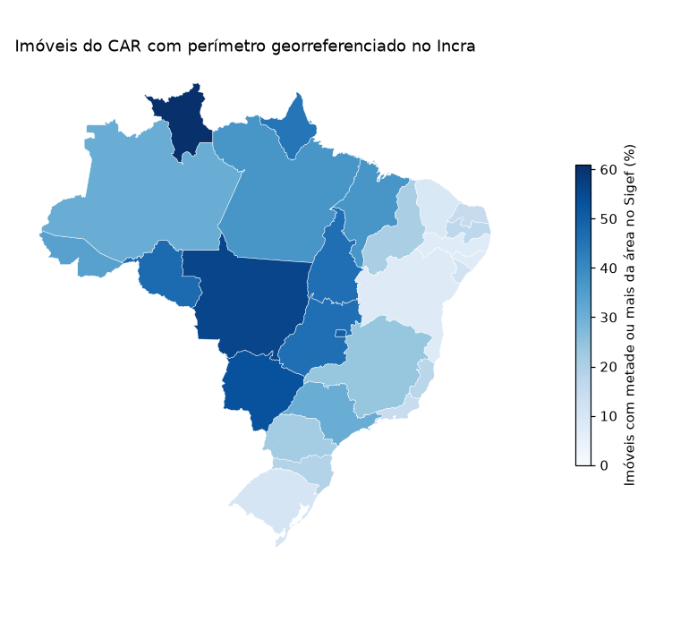
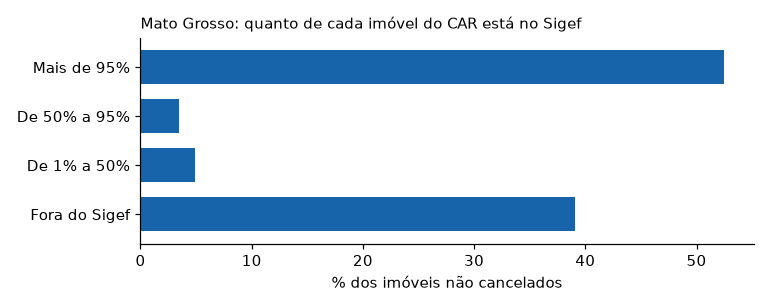
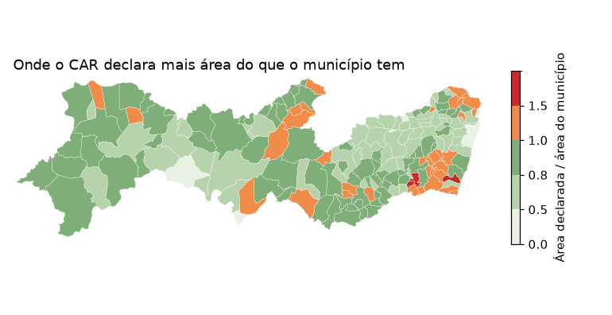
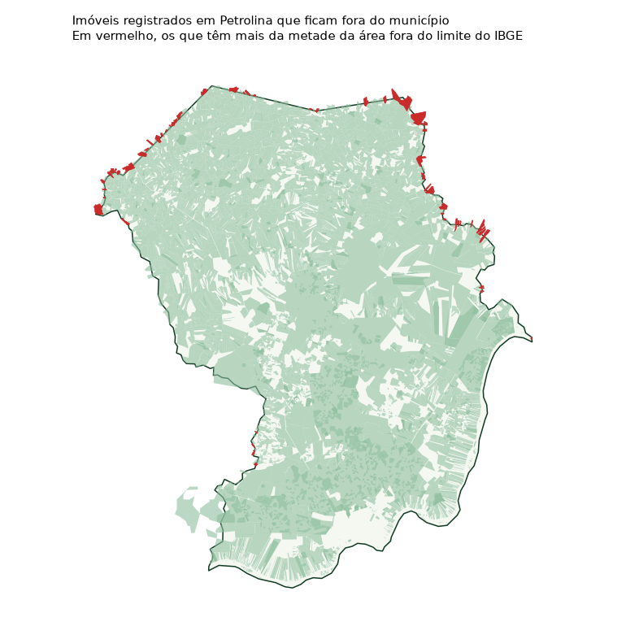

Inconsistências do cadastro¶
O CAR é autodeclarado: quem desenha o perímetro e informa os dados é o próprio
declarante, e a conferência vem depois, na análise. Enquanto ela não chega, o cadastro
guarda sobreposições, imóveis fora do município informado e áreas que não fecham com o
território. Este guia mostra como encontrar essas inconsistências com o carbr, do
país até um município.
Nada aqui é juízo sobre um imóvel em particular: são sinais para orientar a análise e para quem usa os dados saber o que tem em mãos.
import carbr
import geopandas as gpd
def ibge_mesh(path):
url = ("https://servicodados.ibge.gov.br/api/v3/malhas/" + path
+ "formato=application/vnd.geo%2Bjson&qualidade=intermediaria")
return gpd.read_file(url).to_crs(4674)
O que a carga já registra¶
Ao republicar os dados, o carbr anota no catálogo o que encontrou em cada UF:
geometrias inválidas (com autointerseção, por exemplo) e imóveis cujo código começa
com a sigla de outra UF. As inválidas ficam na publicação, marcadas na coluna
geometry_valid.
cat = carbr.car_catalog()
print(cat[["invalid_geometries", "registered_in_other_state"]].sum())
cat.sort_values("invalid_geometries", ascending=False)[
["state", "properties", "invalid_geometries", "registered_in_other_state"]
].head(6)
invalid_geometries 2748
registered_in_other_state 29
dtype: int64
state properties invalid_geometries registered_in_other_state
10 MG 1185013 597 0
25 SP 474172 498 0
8 GO 245524 210 4
17 PR 559480 185 0
11 MS 90552 156 0
23 SC 437300 134 0
O país inteiro: sobreposição e imóveis fora do município¶
Dois sinais são calculados na publicação para cada imóvel não cancelado, e ficam
prontos para consulta: a parcela da área sobreposta a outros imóveis do estado e a
parcela que fica fora do município declarado. car_quality_summary() traz o resumo
por município; somando por UF:
quality = carbr.car_quality_summary()
by_state = quality.groupby("state")[["properties", "overlapping_half", "outside_half"]].sum()
by_state["share_overlapping"] = (100 * by_state["overlapping_half"] / by_state["properties"]).round(1)
by_state["share_outside"] = (100 * by_state["outside_half"] / by_state["properties"]).round(2)
total = by_state["properties"].sum()
print(f"{100 * by_state['overlapping_half'].sum() / total:.0f}% dos imóveis com mais da metade da área sobreposta;",
f"{by_state['outside_half'].sum()} com mais da metade fora do município")
by_state.sort_values("share_overlapping", ascending=False).head(10)
25% dos imóveis com mais da metade da área sobreposta; 117303 com mais da metade fora do município
properties overlapping_half outside_half share_overlapping share_outside
state
DF 20826 15830 10 76.0 0.05
AC 57680 36265 294 62.9 0.51
RR 27145 16807 215 61.9 0.79
AP 16906 9983 192 59.1 1.14
MA 414258 238954 8819 57.7 2.13
MT 206064 97781 3397 47.5 1.65
AM 95521 44325 780 46.4 0.82
PA 345391 157621 2513 45.6 0.73
RO 188779 75054 1790 39.8 0.95
AL 141643 55653 3422 39.3 2.42
A diferença entre os estados é grande:
UFS = {"11": "RO", "12": "AC", "13": "AM", "14": "RR", "15": "PA", "16": "AP", "17": "TO", "21": "MA",
"22": "PI", "23": "CE", "24": "RN", "25": "PB", "26": "PE", "27": "AL", "28": "SE", "29": "BA",
"31": "MG", "32": "ES", "33": "RJ", "35": "SP", "41": "PR", "42": "SC", "43": "RS", "50": "MS",
"51": "MT", "52": "GO", "53": "DF"}
states = ibge_mesh("paises/BR?intrarregiao=UF&")
states["state"] = states["codarea"].map(UFS)
states = states.merge(by_state.reset_index(), on="state", how="left")
ax = states.plot(column="share_overlapping", cmap="OrRd", vmin=0, edgecolor="white", linewidth=0.3,
figsize=(7, 6.4), legend=True,
legend_kwds={"shrink": 0.5, "label": "Imóveis com mais da metade da área sobreposta (%)"})
ax.set_title("Sobreposição entre imóveis do CAR, por UF", loc="left")
ax.set_axis_off()
fig("brasil")

Sobreposição não é sinônimo de disputa: entra na conta o mesmo imóvel declarado duas vezes e o lote que fica dentro de um assentamento. É um sinal de onde a análise tem mais a conferir. Os municípios com mais casos:
quality.sort_values("overlapping_half", ascending=False)[
["state", "municipality", "properties", "overlapping_half", "outside_half"]
].head(6)
state municipality properties overlapping_half outside_half
5562 DF Brasília 20826 15830 10
16 RO Porto Velho 23819 14018 53
2639 MG Januária 12397 9113 90
500 MA Caxias 10714 7716 154
215 PA Marabá 9638 7454 56
12 RO Machadinho D'Oeste 8895 7100 37
car_quality() desce ao imóvel. Mais adiante, este guia refaz a conta de um município
passo a passo, para mostrar de onde os números vêm.
Terras indígenas e unidades de conservação¶
O mesmo resumo traz quantos imóveis têm mais de 1% da área dentro de uma terra indígena (camada da Funai, em todas as fases do processo) ou de uma unidade de conservação (Cadastro Nacional de Unidades de Conservação, do MMA). Nas unidades de conservação o grupo importa: as de proteção integral, como parques e estações ecológicas, em regra não admitem imóveis privados; as de uso sustentável incluem as áreas de proteção ambiental (APA) e as reservas particulares (RPPN), onde a propriedade privada é normal.
protected = quality.groupby("state")[
["properties", "indigenous", "strict_protection", "sustainable_use"]].sum()
protected.sum()
order = protected[["indigenous", "strict_protection"]].sum(axis=1).sort_values().index
ax = protected.loc[order, ["indigenous", "strict_protection"]].rename(
columns={"indigenous": "Terra indígena", "strict_protection": "Proteção integral"}
).plot.barh(stacked=True, color=["#c2255c", "#2b8a3e"], figsize=(7, 6.4), width=0.8)
ax.set_title("Imóveis do CAR sobre terra indígena ou unidade de proteção integral\n"
"Imóveis não cancelados com mais de 1% da área dentro dessas áreas",
loc="left", fontsize=10)
ax.set_ylabel("")
ax.spines[["top", "right"]].set_visible(False)
fig("protegidas")

Os municípios com mais casos, em cada tipo:
quality.sort_values("indigenous", ascending=False)[
["state", "municipality", "properties", "indigenous", "indigenous_ha"]].head(5)
state municipality properties indigenous indigenous_ha
1826 BA Abaré 2167 1114 9996.96
519 MA Fernando Falcão 1291 658 640981.44
1714 AL Palmeira dos Índios 5745 481 4111.04
2605 MG Itacarambi 2458 448 26549.34
532 MA Grajaú 5508 370 106598.06
quality.sort_values("strict_protection", ascending=False)[
["state", "municipality", "properties", "strict_protection", "strict_protection_ha"]].head(5)
state municipality properties strict_protection strict_protection_ha
2639 MG Januária 12397 2377 263162.61
16 RO Porto Velho 23819 1773 359216.41
2614 MG Itamonte 1854 1384 29674.25
89 AM Canutama 2883 1313 685990.78
3219 RJ Nova Friburgo 3577 1287 32539.68
Por imóvel, car_quality() traz a parcela da área e o nome da terra indígena ou da
unidade de conservação. É o que car_check() usa na triagem: um cadastro ativo passa de
"ok" a "attention" quando mais de 1% da área está em terra indígena ou em unidade de
proteção integral, e a nota diz qual.
aguas_belas = carbr.car_quality("PE", municipality="Águas Belas")
inside = aguas_belas[aguas_belas["indigenous_share"] > 0.5]
inside[["property_code", "indigenous_share", "indigenous_land"]].head(3)
check = carbr.car_check(inside["property_code"].head(2))
for row in check.itertuples():
print(row.check, "|", row.note)
attention | Analisado, com notificação sem resposta do declarante. Sobrepõe terra indígena (Fulni-ô) em toda a área.
attention | Analisado, com notificação sem resposta do declarante. Sobrepõe terra indígena (Fulni-ô) em toda a área.
O sinal vem de perímetros autodeclarados cruzados com limites oficiais, e não é uma conclusão sobre o imóvel: há terras indígenas ainda em estudo, e cadastros anteriores à criação de uma unidade de conservação.
O perímetro confere com o Incra?¶
O CAR é declarado pelo próprio produtor. O Sigef, do Incra, guarda outra coisa:
perímetros medidos por um profissional e aprovados. Cruzar os dois diz quanto do que foi
declarado coincide com um georreferenciamento oficial. sigef_share é a parcela da área
do imóvel coberta por parcelas particulares ou lotes de assentamento do Sigef.
sigef = quality.groupby("state")[["properties", "certified"]].sum()
sigef["share"] = (100 * sigef["certified"] / sigef["properties"]).round(1)
print(sigef[["properties", "certified"]].sum().to_string())
sigef.sort_values("share", ascending=False).head(8)
properties 8405796
certified 1825375
properties certified share
state
RR 27145 16539 60.9
MT 206064 115460 56.0
MS 88788 47114 53.1
DF 20826 10476 50.3
RO 188779 89265 47.3
TO 103190 47595 46.1
GO 242639 111804 46.1
AP 16906 7530 44.5
coverage = ibge_mesh("paises/BR?intrarregiao=UF&")
coverage["state"] = coverage["codarea"].map(UFS)
coverage = coverage.merge(sigef.reset_index(), on="state", how="left")
ax = coverage.plot(column="share", cmap="Blues", vmin=0, edgecolor="white", linewidth=0.3,
figsize=(7, 6.4), legend=True,
legend_kwds={"shrink": 0.5, "label": "Imóveis com metade ou mais da área no Sigef (%)"})
ax.set_title("Imóveis do CAR com perímetro georreferenciado no Incra", loc="left")
ax.set_axis_off()
fig("sigef")

No Centro-Oeste e em parte da Amazônia, metade dos cadastros tem o perímetro conferido; no Nordeste, menos de um em cada dez. Dentro de um estado, a distribuição é de extremos: ou o imóvel não passou pelo Sigef, ou coincide quase todo.
mt = carbr.car_quality("MT")
classes = pd.cut(mt["sigef_share"], [-1, 0.01, 0.5, 0.95, 2],
labels=["Fora do Sigef", "De 1% a 50%", "De 50% a 95%", "Mais de 95%"])
share = (100 * classes.value_counts(sort=False) / len(mt)).round(1)
ax = share.plot.barh(color="#1864ab", figsize=(7, 2.8), width=0.7)
ax.set_title("Mato Grosso: quanto de cada imóvel do CAR está no Sigef", loc="left", fontsize=10)
ax.set_xlabel("% dos imóveis não cancelados")
ax.set_ylabel("")
ax.spines[["top", "right"]].set_visible(False)
fig("sigef-classes")

Um imóvel entre 1% e 95% merece atenção: o CAR e o Sigef discordam sobre onde ele fica. As glebas públicas, as unidades de conservação e as terras indígenas que também estão no Sigef não entram nessa conta.
O código diz um município, o cadastro diz outro¶
O código do imóvel traz o município em que ele foi registrado (UF-0000000-…). Em
Pernambuco, comparando com a coluna municipality_code:
moved = carbr.car_tbl("PE").filter(
"substr(property_code, 4, 7) <> municipality_code::VARCHAR"
).project("property_code, municipality, area_ha").df()
print(len(moved), "imóveis")
moved["municipality"].value_counts().head(6)
1138 imóveis
municipality
Araripina 106
Trindade 102
Pedra 79
Itaíba 47
Itapetim 25
Ouricuri 25
Name: count, dtype: int64
Nem todo caso é erro — imóveis mudam de município quando a base municipal é atualizada —, mas é uma lista curta para conferir.
Mais área declarada do que território¶
Somando a área declarada dos imóveis de cada município e dividindo pela área do município na malha do IBGE, o resultado não deveria passar de 1. Passa em vários.
mesh = ibge_mesh("estados/PE?intrarregiao=municipio&")
mesh["municipality_code"] = mesh["codarea"].astype(int)
mesh["territory_ha"] = mesh.to_crs(6933).area / 1e4 # projeção de área igual
ratio = mesh.merge(carbr.car_municipalities("PE"), on="municipality_code", how="left")
ratio["ratio"] = ratio["area_ha"] / ratio["territory_ha"]
print((ratio["ratio"] > 1).sum(), "de", len(ratio), "municípios com mais área declarada que território")
ratio.sort_values("ratio", ascending=False)[
["municipality", "properties", "area_ha", "territory_ha", "ratio"]
].head(6).round(2)
36 de 185 municípios com mais área declarada que território
municipality properties area_ha territory_ha ratio
46 Catende 1289.0 42584.42 20749.68 2.05
88 Jaqueira 1203.0 16282.03 8736.33 1.86
134 Rio Formoso 776.0 37161.96 22835.97 1.63
52 Cortês 756.0 14886.64 10283.63 1.45
128 Primavera 620.0 16194.58 11197.19 1.45
133 Ribeirão 799.0 39828.67 29096.37 1.37
A concentração na Zona da Mata sugere sobreposição sistemática entre imóveis, não erro isolado.
from matplotlib.colors import BoundaryNorm, ListedColormap
cmap = ListedColormap(["#e8f1e4", "#b7d3ad", "#7fae78", "#f08c4a", "#c92a2a"])
norm = BoundaryNorm([0, 0.5, 0.8, 1, 1.5, 10], cmap.N)
ax = ratio.plot(column="ratio", cmap=cmap, norm=norm, edgecolor="white", linewidth=0.2,
figsize=(7, 3.6), legend=True,
legend_kwds={"shrink": 0.6, "ticks": [0, 0.5, 0.8, 1, 1.5],
"label": "Área declarada / área do município"},
missing_kwds={"color": "#d9d9d9"})
ax.set_xlim(-41.4, -34.8)
ax.set_ylim(-9.5, -7.25)
ax.set_title("Onde o CAR declara mais área do que o município tem", loc="left")
ax.set_axis_off()
fig("razao")

Dentro de um município: Petrolina¶
Com os perímetros, dá para ir ao detalhe. Os imóveis não cancelados de Petrolina e o limite do município, em coordenadas planas para medir em hectares:
petrolina = carbr.car_properties("PE", municipality="Petrolina")
petrolina = petrolina[(petrolina["status"] != "cancelled") & petrolina["geometry_valid"]]
utm = petrolina.to_crs(31984).reset_index(drop=True)
boundary = mesh[mesh["codarea"] == "2611101"].to_crs(31984)
len(utm)
10849
Imóveis fora do município¶
Recortando cada imóvel pelo limite do município, sai a parcela da área que fica do lado de fora. Faixas estreitas na divisa são esperadas, porque o traçado do IBGE e o do declarante nunca coincidem; o sinal é o imóvel com mais da metade da área fora.
inside_ha = utm.intersection(boundary.geometry.iloc[0]).area / 1e4
utm["geometry_ha"] = utm.area / 1e4
utm["outside"] = (1 - inside_ha / utm["geometry_ha"]) > 0.5
print(utm["outside"].sum(), "imóveis,", round(utm.loc[utm["outside"], "area_ha"].sum()), "hectares")
90 imóveis, 3359 hectares
ax = boundary.plot(color="#f4f8f1", edgecolor="#123a23", linewidth=1, figsize=(7, 7))
utm[~utm["outside"]].plot(ax=ax, color="#8fbf9f", alpha=0.6)
utm[utm["outside"]].plot(ax=ax, color="#c92a2a", edgecolor="#c92a2a", linewidth=0.5)
ax.set_title("Imóveis registrados em Petrolina que ficam fora do município\n"
"Em vermelho, os que têm mais da metade da área fora do limite do IBGE",
loc="left", fontsize=10)
ax.set_axis_off()
fig("fora")

Sobreposições¶
Uma junção espacial do conjunto com ele mesmo, com o predicado overlaps, aponta
para cada imóvel os outros com que ele divide área (tocar na divisa não conta).
pairs = gpd.sjoin(utm[["property_code", "geometry"]], utm[["geometry"]], predicate="overlaps")
utm["neighbours"] = pairs.groupby(level=0).size().reindex(utm.index, fill_value=0)
summed_ha = utm["geometry_ha"].sum()
covered_ha = utm.union_all().area / 1e4
print(f"{(utm['neighbours'] > 0).sum()} de {len(utm)} imóveis sobrepõem ao menos um vizinho")
print(f"soma das áreas: {summed_ha:.0f} ha; área coberta: {covered_ha:.0f} ha; "
f"contado em dobro: {summed_ha - covered_ha:.0f} ha")
8462 de 10849 imóveis sobrepõem ao menos um vizinho
soma das áreas: 408603 ha; área coberta: 367152 ha; contado em dobro: 41451 ha
A maioria das sobreposições são faixas estreitas na divisa. Os casos que mais pesam são poucos:
utm.sort_values("neighbours", ascending=False)[
["property_code", "area_ha", "fiscal_modules", "size_class", "neighbours"]
].head(6)
property_code area_ha fiscal_modules size_class \
2070 PE-2611101-588BC484570D440484F527F07DF5AFFA 81578.6042 0.5209 small
3526 PE-2611101-5316F05D569C41C4847C52AF2C7E5CCB 6647.5275 0.6230 small
3682 PE-2611101-5149DB80F9E54FDDB445BDC40DF501AF 360.5831 6.5561 medium
5330 PE-2611101-0B75BD9F97224B73A761792FC4095A9C 305.9185 5.5622 medium
38 PE-2611101-961DA0E4B2FA4FA6BA6601588C06310A 143.0881 2.5394 small
5329 PE-2611101-CB1BE273577643AD9BC07FB09008FB34 305.8473 5.5609 medium
neighbours
2070 325
3526 49
3682 41
5330 40
38 26
5329 26
"Pequeno" nem sempre é pequeno¶
O porte (size_class) vem dos módulos fiscais informados pelo Sicar, não da área. Em
assentamentos e territórios de povos e comunidades tradicionais, um único cadastro
cobre muitas famílias, e um perímetro de milhares de hectares aparece com menos de
quatro módulos. Em Pernambuco, os imóveis "pequenos" com mais de 440 hectares — quatro
vezes o maior módulo fiscal do país:
carbr.car_tbl("PE").filter("size_class = 'small' AND area_ha > 440").aggregate(
"property_type, count(*) AS properties, round(sum(area_ha)) AS area_ha"
).df()
property_type properties area_ha
0 traditional_community 65 164138.0
1 rural_property 1 926.0
2 settlement 432 651693.0
Quem conta "pequenos produtores" pelo porte deve separar o tipo do imóvel
(property_type) antes.
O que fazer com isso¶
Cada sinal acima vira uma lista de imóveis: property_code leva ao cadastro, e
car_property() devolve o perímetro. Para repetir a análise em outro município ou
outra UF, basta trocar os argumentos.